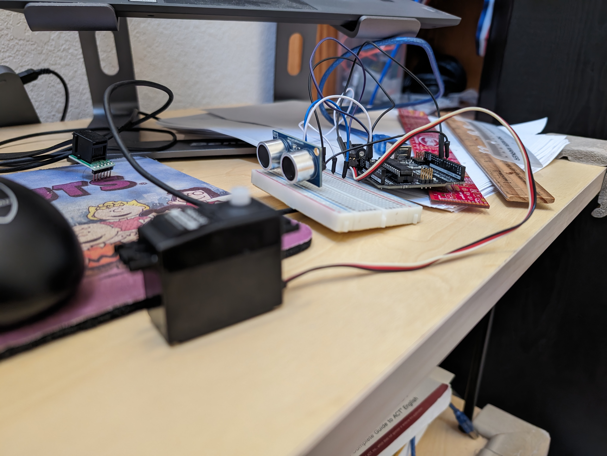

September
Srivatsa got the team members' information in order to have it be put in the website.


October
Akshinth helped Aarin, Sanchay and Srivatsa to map out a template for the main website. Peter coded the main website template accordingly. Srivatsa helped Peter fill out info for each person's webpage. Oliver added the pictures. Oliver and Akshinth added the journal template for making progress reports on.


November
Sanchay, Aarin, and Akshinth worked on the game. Aarin started brainstorming ideas of the game. He imported platforms for the character to animate on. After, he coded the tennis balls falling from the roof and added a timer. Akshinth expanded on the game's mechanics and ironed out all the bugs and Sanchay refined the visuals of the top bar. Srivatsa made the moving motion more realistic and smooth. Oliver logged the broad events into this tracker. Peter began the recording the chords and the loading page for the piano project; he began planning materials for the arduino project.


December
Oliver and Peter had refined the website by adding when interacting or hovering over icons. For the piano project, he recorded his own piano, edited the sound, and linked them to each button on the piano webpage. After building the arduino project, he recorded it on youtube and imported its HTML onto the Arduino webpage. Peter also added the styling for the progress tracker. Lastly, he made each game connected to one another.
